Autores Internacionais |
Machado de Assis - Escritor Brasileiro
Machado de Assis é um dos mais importantes escritores brasileiros. Ele nasceu em 21 de junho de 1839, no Rio de Janeiro.
Mais tarde, trabalhou como aprendiz de tipógrafo e revisor, além de ser funcionário da
Secretaria de Estado do Ministério da Agricultura,
Comércio e Obras Públicas.
O romancista, contista, dramaturgo, poeta e cronista, que faleceu em 29 de setembro de 1908, no Rio de Janeiro,
foi o principal representante do realismo brasileiro. Assim, em romances como Memórias póstumas de Brás Cubas,
ele trabalhou com a temática
do adultério e fez críticas à elite burguesa do século XIX.
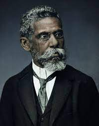
Maiores Obras
Dom Casmurro (1899) — Romance
Quincas Borba (1891) — Romance
Histórias da meia-noite (1873) — Contos
Memórias póstumas de Brás Cubas (1881) — Romance
|
José de Alencar - Escritor Brasileiro
Filho de um ilustre senador do império, José Martiniano de Alencar cursou advocacia, mas logo tornou-se político,
jornalista e escritor.
Foi nessa última atividade que obteve maior destaque para a posteridade. Considerado o maior
romancista do Romantismo brasileiro,
Alencar criou uma literatura nacionalista, empregando um vocabulário e uma
sintaxe típicos do Brasil e evitando o estilo lusitano,
que até então prevalecia na literatura aqui produzida.
Sua obra traça um perfil da cultura e dos costumes de sua época, bem como
da História do Brasil,
tendo como preocupação essencial a busca de uma identidade nacional, seja quando descreve a
sociedade burguesa
do Rio de Janeiro, seja quando se volta para os temas ligados ao índio ou ao sertanejo.
Seus romances costumam ser classificados em quatro
categorias: urbanos, históricos, indianistas, e regionalistas.

Maiores Obras
Iracema (1865) — Romance
Senhora (1875) — Romance
O Guarani (1857) — Romance
A Viúvinha (157) — Romance
|
Maria Firmina dos Reis - Escritora brasileira
Maria Firmina dos Reis é uma escritora maranhense e romântica do século XIX, nascida em 11 de março de 1822 e
falecida em 11
de novembro de 1917. Além de escritora, foi professora, musicista e a criadora da primeira escola mista do Brasil.
É considerada a primeira romancista negra do Brasil, escrevendo o primeiro romance abolucionista do país.
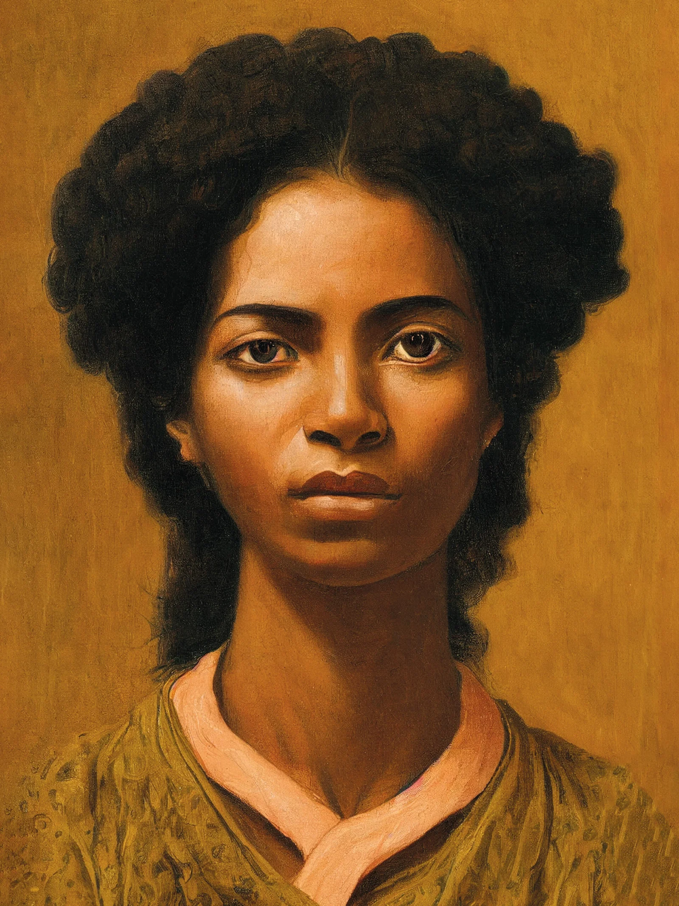
Maiores Obras
Gupeva Conto
Úrsula (1859) — Romance
A Escrava (1887) — Romance
Cantos à Beira-Mar (1871) — Poesia
|
Clarice Lispector - Escritora Brasileira
Clarice Lispector é uma escritora brasileira. Ela nasceu na Ucrânia, mas chegou ao Brasil quando tinha dois anos de idade.
Mais tarde, fez faculdade de Direito, morou em diversos países em companhia do marido cônsul,
publicou muitos livros e também atuou como jornalista.
A autora,
que faleceu em 9 de dezembro de 1977, no Rio de Janeiro, faz parte da terceira geração modernista (ou pós-modernismo).
Suas obras apresentam fluxo de consciência, fragmentação e metalinguagem, características que podem ser observadas em
A hora da estrela,
um de seus livros mais conhecidos.
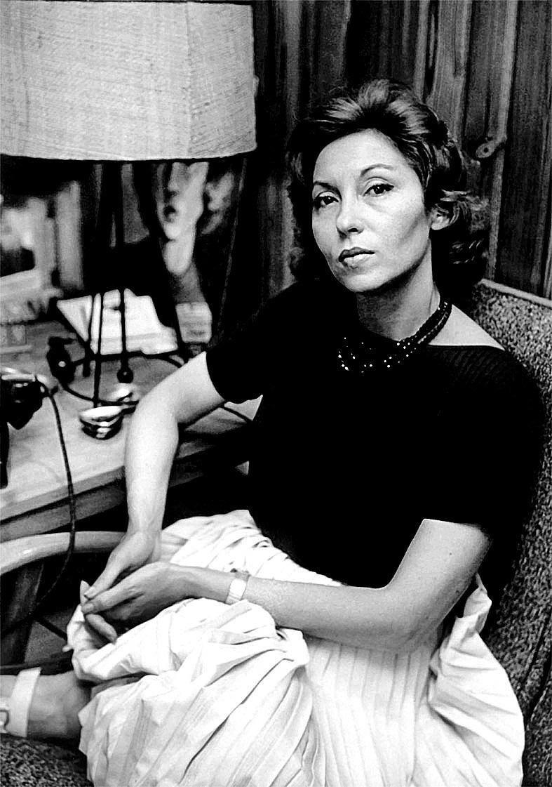
Maiores Obras
A hora da estrela (1977) — Romance
Um sopro de vida (1978) — Romance
Onde estivestes de noite (1974) — Conto
Laços de família (1960) — Conto
|
Guimarães Rosa - Escritor Brasileiro
Guimarães Rosa foi um dos mais importantes escritores brasileiros do modernismo, além de ter seguido a carreira de diplomata e médico.
Considerado por muitos o maior escritor brasileiro do século XX e um dos maiores de todos os tempos.
Foi o terceiro ocupante da Cadeira nº 2 da Academia Brasileira de Letras (ABL), em 1967.
Fez parte da terceira geração modernista, chamada de "Geração de 45".
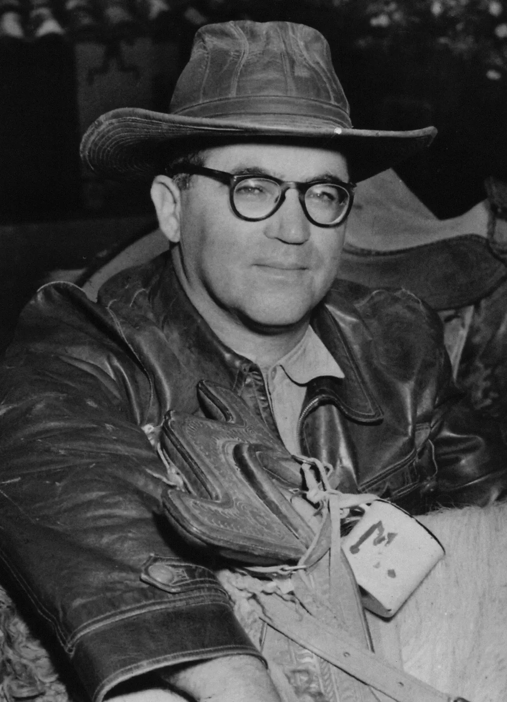
Maiores Obras
Sagarana (1946) — Conto, Ficção
Grande Sertão: Veredas (1956) — Romance
Campo Geral (1964) — Novela, Ficção
Primeiras Estórias (1962) — Conto, Ficção
|
Graciliano Ramos - Escritor Brasileiro
Escritor, jornalista e preso político, Graciliano Ramos é considerado o mais importante prosador da Geração de 30.
O estilo próprio de sua narrativa, sem floreios, seco e simples, propicia uma abordagem direta
e profunda das situações e personagens retratadas.
Grande romancista e contista,
o autor destaca-se pela habilidade em abordar a interioridade humana, as reações psicológicas humanas
e as relações
humanas com o meio que se impõe.
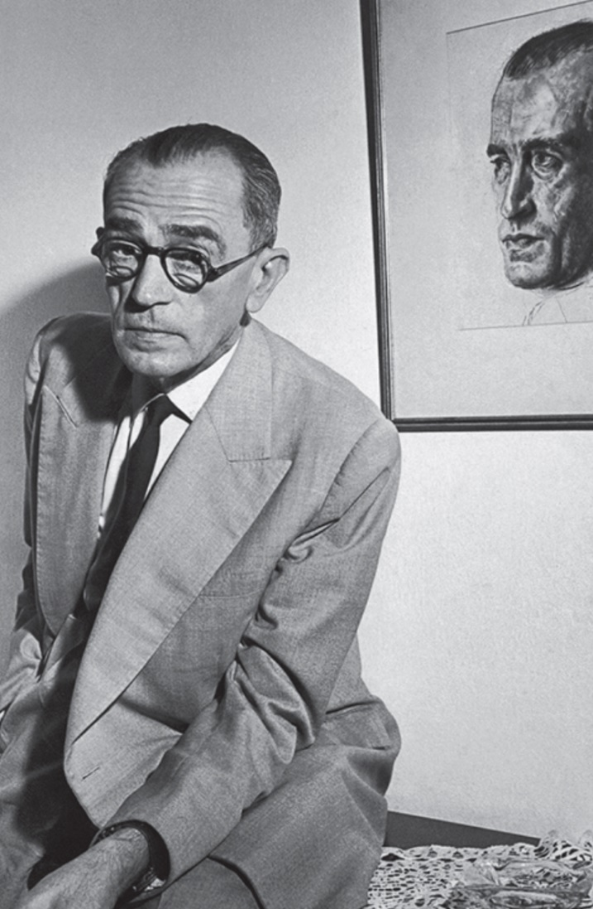
Maiores Obras
Angústia (1936) — Romance
Vidas Secas (1938) — Romance
Memórias do Cárcere (1953) — Biografia
A Terra dos Meninos Pelados (1939) — Contos Infanto Juvenis
|
Conceição Evaristo - Escritora Brasileira
Conceição Evaristo (Maria da Conceição Evaristo de Brito) nasceu em 29 de novembro de 1946, Belo Horizonte MG. Romancista,
contista, poeta,
pesquisadora e professora. Teve que conciliar os estudos com o trabalho como empregada doméstica, até concluir o curso Normal,
em 1971,
já aos 25 anos. Mudou-se então para o Rio de Janeiro, onde passou num concurso público para o magistério e estudou Letras na UFRJ.
É Mestre em Literatura Brasileira pela PUC do Rio de Janeiro e Doutora em Literatura Comparada
na Universidade Federal Fluminense, UFF.
É uma das mais influentes escritoras do movimento pós-modernista no Brasil, escrevendo nos gêneros
da poesia, romance, conto e ensaio.
Como pesquisadora-docente, seus trabalhos focavam na literatura comparada.
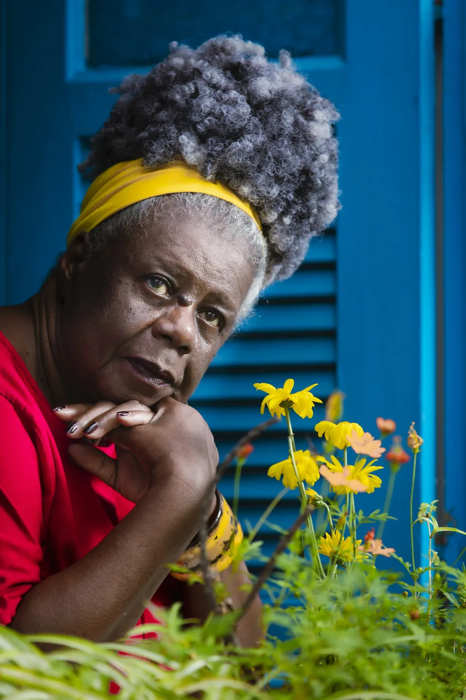
Maiores Obras
Ponciá Vicêncio (2003) — Romance
Becos da Memória (2006) — Romance
Olhos d'água (2014) — Ficção
Poemas da recordaç̧ão e outros movimentos (2008) — Poesia
|
Cora Coralina - Escritora Brasileira
Ana Lins dos Guimarães Peixoto Bretas, poeta que ficou conhecida como Cora Coralina, nasceu no dia 20 de agosto de 1889,
na cidade de Goiás,
no estado de Goiás. Durante sua vida foi doceira, vendedora de livros, escreveu para jornais,
candidatou-se a vereadora, além de ter sido uma poetisa e
contista excepcional. Sua poesia é caracterizada pela simplicidade
e delicadeza cotidiana de uma mulher que versou os próprios aprendizados durante sua
passagem pela vida.
Cora Coralina começou a escrever aos 14 anos, e chegou até a publicar alguns
de seus escritos, no ano de 1908, no jornal de poemas “A Rosa”.
Mas foi somente aos 75 anos que ela publicou seu primeiro livro: “O Poema dos Becos de Goiás e Estórias Mais”.
Em 1922 foi convidada a participar da Semana de
Arte Moderna,
mas as limitações impostas pelo marido a impediram de participar. Para compreender Cora é preciso lê-la:
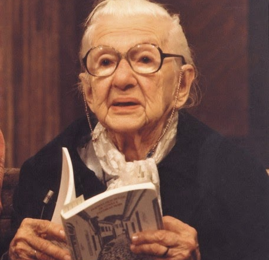
Maiores Obras
Meu Livro de Cordel (1973) — Poesia
O tesouro da casa velha (1989) — Ficção
Estórias da casa velha da ponte (1985) — Romance
O Poema dos Becos de Goiás e Estórias Mais (1965) — Poesia
|
Autores Internacionais |
Jane Austen - Escritora Inglesa
Jane Austen é uma escritora inglesa nascida em 16 de dezembro de 1775. Foi criada em um ambiente rural e clerical, mas no qual a arte
e o conhecimento eram valorizados. Começou a escrever textos literários por volta dos 12 anos de idade.
E com a idade de 20 anos, já tinha atingido
certa maturidade artística. Suas obras apresentam características de transição entre o
Romantismo e o Realismo, falando sobre o amor e o casamento,
mas sem idealizações, de forma que a realidade social da mulher de sua época,
dependente financeiramente dos homens, é evidenciada. Aliás, por ser mulher,
a autora publicou suas obras de forma anônima.

Maiores Obras
Emma (1815) — Romance
Amor e amizade (1790) — Romance
Orgulho e Preconceito (1813) — Romance
A abadia de Northanger (1818) — Romance
|
Sarah J. Maas - Escritora Estadunidense
Sarah Janet Maas assina como Sarah J. Maas (Nova Iorque, 5 de março de 1986) é uma escritora norte-americana de fantasia.
Sua obra alcançou o patamar de best-seller do New York Times e USA Today. Seu livro de estreia:
Trono de Vidro (Throne of Glass),
foi publicado em português em 2013 pela Galera Record (no Brasil).
Até 2021, ela vendeu mais de doze milhões de cópias de seus livros
e eles foram traduzidos para trinta e sete idiomas.
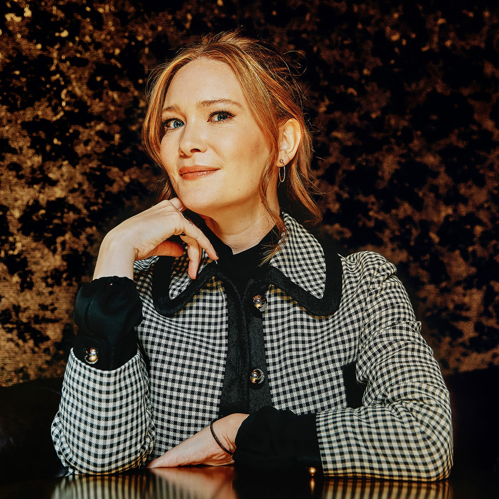
Maiores Obras
Corte de Espinhos e Rosas (2015) — Fantasia
Corte de Névoa e Fúria (2016) — Fantasia
Trono de vidro - vol. 1 (2012) — Fantasia
Casa de chama e sombra Vol. 3 (2024) — Fantasia
|
José Saramago - Escritor Português
"José Saramago, escritor português, nasceu em 16 de novembro de 1922. Publicou seu primeiro livro,
Terra do pecado, em 1947.
Além de escritor, foi serralheiro mecânico e tradutor. Em 1998, Saramago ganhou o
Prêmio Nobel de Literatura.
Sua obra mais polêmica é O evangelho segundo Jesus Cristo (1991), que gerou muitas
críticas ao autor na época de sua publicação.
Mas a obra mais conhecida é Ensaio sobre a cegueira (1995),
devido à sua bem-sucedida adaptação para o cinema.
As obras literárias de José Saramago são realistas,
apresentam temática social, crítica política e religiosa,
elementos do realismo fantástico e a defesa do
protagonismo humano como solução para os problemas sociais.
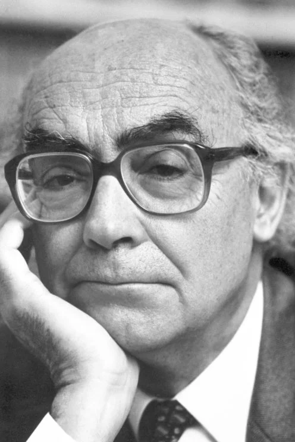
Maiores Obras
Ensaio sobre a Cegueira (1995) — Romance
Levantado do Chão (1980) — Romance
O Evangelho segundo Jesus Cristo(1991) — Romance
O Conto da Ilha Desconhecida(1997) — Conto, Ficção especulativa
|
Edgar Allan Poe - Escritor Estadunidense
Edgar Allan Poe, escritor, crítico literário e editor, é considerado um dos mais importantes escritores do gênero de terror do mundo.
Seus contos e poemas, permeados por situações misteriosas e fantasmagóricas, lembram em muito o estilo gótico,
vertente do Romantismo caracterizada
pela representação de situações ligadas à noite e à morte. Além de grande
ficcionalista e poeta, Poe também foi autor de obras teóricas na área
da literatura, tornando-se um dos principais teóricos do gênero conto.

Maiores Obras
O Corvo (1845) — Poema Narrativo
O Gato Preto (1843) — Conto
Metzengerstein (1832) — Conto
A Queda da Casa de Usher (1839) — Conto
|
Agatha Christie - Escritora Britânica
Agatha Christie (1890-1976) foi uma escritora inglesa que criou "Hercule Poirot",
um detetive belga que aparece em 33
de suas obras e tornou-se um dos mais célebres da ficção policial.
Agatha foi a maior
escritora policial de todos os tempos. Escreveu 93 livros e 17 peças teatrais.
De família rica,
Agatha estudou em casa com diversos professores particulares.
Aprendeu piano e canto. Com oito anos iniciou sua educação formal.
Passava a maior parte do tempo escrevendo poemas e contos.
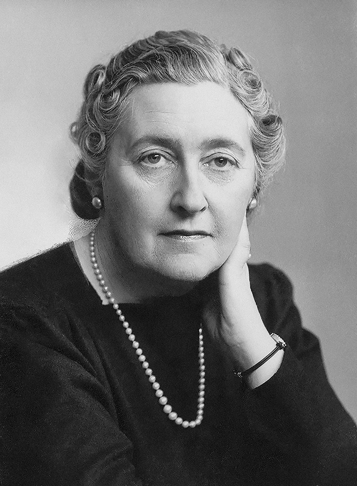
Maiores Obras
A Noite das Bruxas (1966) — Romance Policial
O Misterioso Caso de Styles (1920) — Ficção Policial
O Assassinato de Roger Ackroyd (1926) — Ficção Policial
O Assassinato No Expresso Oriente (1934) — Romance Policial
|
J. K. Rowling - Escritora Britânica
Joanne "Jo" Rowling, mais conhecida como J. K. Rowling, é uma escritora,
roteirista e produtora cinematográfica britânica,
notória por escrever a série de livros Harry Potter. Os livros ganharam uma popularidade mundial,
recebendo múltiplos prêmios e vendendo mais de 600 milhões de cópias,
o que a tornou a série literária mais vendida da história.
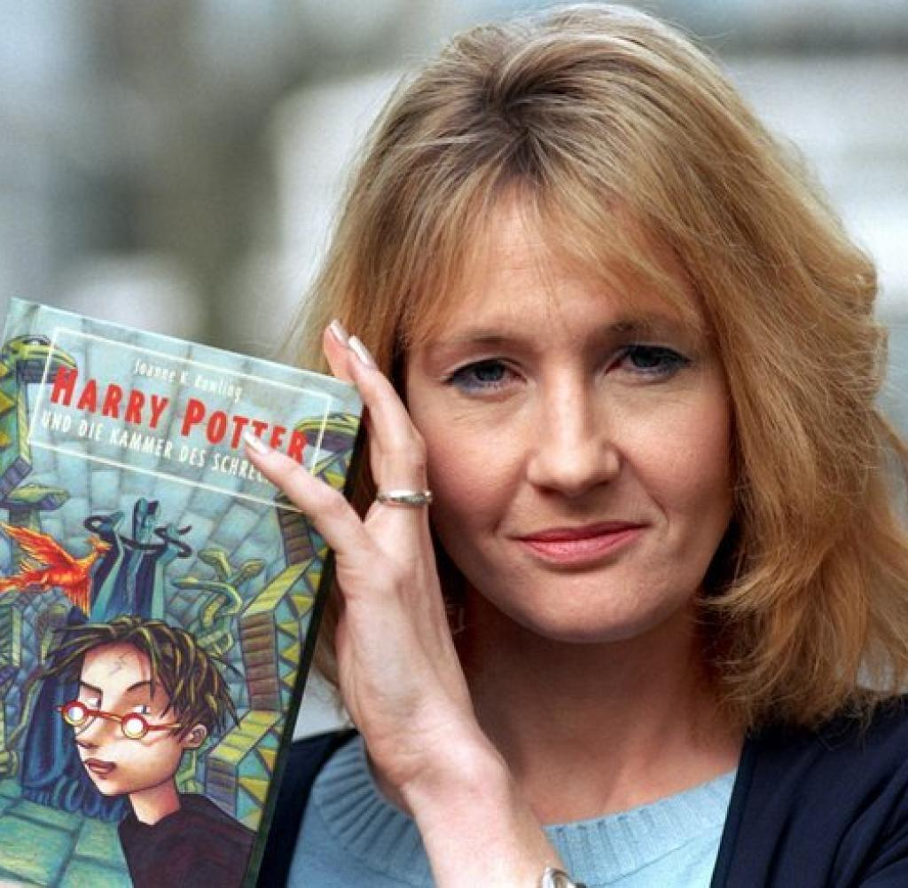
Maiores Obras
Harry Potter e a Pedra Filosofal (1997) — Fantasia
Harry Potter e o Prisioneiro de Azkaban (1999) — Fantasia
Harry Potter e as Relíquias da Morte (2007) — Fantasia
Animais Fantásticos e Onde Habitam (2001) — Fantasia
|